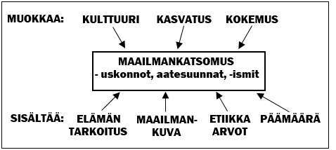
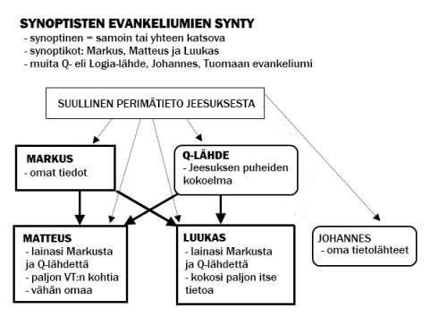

1. Johdatus uskonnolliseen ajatteluun
2. Raamattu - kristillisen maailmankatsomuksen perusta
I. JOHDATUS USKONNOLLISEEN AJATTELUUN
1. Maailmankatsomuksen muotoutuminen
• Maailmankatsomus = 1) käsitys maailmasta ja sen lainalaisuuksista (maailmankuva), 2) käsitys elämän tarkoituksesta ja päämäärästä ja 3) käsitykset arvoista ja siitä, miten tulisi elää.
• Maailmankatsomuksia ovat -ismit, uskonnot ja ideologiat eli aatesuunnat
• Maailmankatsomus muotoutuu kulttuurin, kasvatuksen ja (elämän) kokemusten kautta

• Uskonto on maailmankatsomus, jossa tarkoituksen perustana on tuonpuoleisuus ja yliluonnollisuus
• Lähtökohta: tarkoitusta etsivä ihminen
• Tiede ei voi antaa vastauksia ns. perimmäisiin kysymyksiin:
- Mikä on elämän tarkoitus?
- Mitä on kuoleman jälkeen?
- Miten tulisi elää?
• Tiede/tieto on sidoksissa aistiemme rajallisuuteen ja aivojemme kykyyn ratkaista ongelmia > tieto on hyvin perusteltu tosi uskomus (tieteenfilosofinen määritelmä) vrt. FI3 (Tiedon ja todellisuuden filosofia)
• Ihminen ei saa varmoja vastauksia (kaikki jää lopulta mysteeriksi)
• Erilaisia vastausyrityksiä mm.:
1) Uskonnot: elämän jatkuminen kuoleman jälkeen (taivas, paratiisi, jälleensyntyminen)
2) Ateistiset ideologiat: yksilön elämän totaalinen loppuminen
2. Uskonto ilmiönä
• Uskonto on yksilöiden ja ryhmien vakava sosiaalinen asennoituminen siihen mahtiin tai niihin mahteihin, joiden he viimekädessä uskovat säätelevän pyrkimyksiään ja kohtaloitaan. (J.B.Bratt)
• Uskonnon kolme piirrettä: käsitys yliluonnollisesta,pyhyydestä ja perimmäisestä tarkoituksesta
• Uskontotiede tutkii uskontoja tasapuolisesti (ks. UE4)
• Uskonnon viisi ulottuvuutta (suluissa esimerkit):
1. tiedollinen eli kognitiivinen (opit, tulee esiin mm. pyhissä kirjoissa)
2. tunnepohjainen eli affektiivinen (tunne Jumalan läheisyydestä)
3. toiminnallinen eli konatiivinen tekijä (rukous)
4. yhteisöllinen eli sosiaalinen tekijä (jumalanpalvelus)
5. kulttuuritekijä (taide, mm. kuvapatsaat, maalaukset, temppelit)
• Uskonto esittäytyy myyteissä (elämän peruskysymyksiä käsittelevissä kertomuksissa, kuten Raamattu) ja riiteissä (uskonnollisissa symbolisissa käyttäytymistavoissa, kuten konfirmaatio).
3. Esimerkki uskonnollisesta pohdinnasta: Onko Jumala olemassa?
• Teismin eli jumalauskon muotoja:
- monoteismi = uskon yhteen jumalaan (juutalaisuus, kristinusko, islam)
- monolatria = yhden jumalan palvonta, mutta muitakaan jumalia ei kielletä (muinainen Palestiinan uskonnollisuus)
- deismi = jumala on luoja, mutta ei puutu enää ihmisten elämään (valistusfilosofia)
- polyteismi = monijumalisuus (hindulaisuus)
- panteismi = kaikkijumalisuus (hindulaisuus)
- monismi = todellisuutta hallitsee yksi perusvoima (esim. hindulaisuuden brahman)
• Ateismi = näytön (empiirisen havainnon) puutteesta johtuva uskon puute jumalaan.
• Agnostisismi = yliaistillisista asioista kuten jumalasta emme voi tietää tarpeeksi.
• Jumala joko on tai ei ole olemassa, uskoimme Jumalaan tai emme (meidän uskomme ei tee Jumalaa olevaksi, ellei häntä ole; ja toisin epäuskomme ei tee Jumalaa olemattomaksi, jos hän on)
• Jos Jumala on, mikä uskonto tarjoaa oikean jumalan? Loppumaton kenttä, siksi valitsemme tietoisesti kristillisen lähtökohdan.
• Kristillisiä todistuksia Jumalan olemassaolosta (jumalatodistukset ks. kurssi FI3 ja FI5)
1) Elämällä ei ole perimmäistä tarkoitusta ilman Jumalaa. Ongelmana: pitäisikö elämällä
olla jokin tarkoitus?
2) Maailmankaikkeuden ja elämän synnyn ja järjestyksen takana täytyy olla
Suunnittelija (kausaalinen, kosmologinen ja teleologinen todistus)
- Nykyisin esillä ns. ID eli Intelligent Design -teoria, jonka mukaan luonnossa vallitseva järjestys viittaa suunnitelmallisuuteen. Analogiana on esitetty ihmisen tuottamat koneet ja laitteet, jotka vaativat suunnitelmallisuutta ja suunnittelijan. Eikö siis luonnon vielä monimutkaisempi järjestys ja toiminta edellytä todella Älykästä Suunnittelijaa? Teoriaa on markkinoitu Raamatusta vastauksensa etsivää kreationismia tieteellisempänä erityisesti Yhdysvalloissa ja Euroopassa Raamattuun uskovien tiedemiesten piirissä.
3) Moraali ja oikeudenmukaisuus edellyttävät perimmäistä
Oikeudenmukaisuutta (moraalinen todistus)
• Ateistisia näkökantoja:
1) Elämällä ei ole mitään tarkoitusta. Ihmiselämä on absurdia, sillä Jumalaa ei
ole olemassa (eksistentialistinen ateismi). Ongelmana: ei anna sinänsä mitään vastausta.
2) Sattuma ja evoluutio selittävät kaikkeuden synnyn (naturalistinen ateismi).
Ongelmana: perustana osin usko (teoriat ei faktat).
3) Mitään yliluonnollista, jota ei voida empiirisesti havainnoida ja tutkia, ei ole
("tieteellinen ateismi"). Ongelmana: tieteen rajallisuus (esim. 1600-luvulla ei ollut siis vielä olemassa bakteereja tai hermosoluja).
4) Muita: freudilainen ateismi (usko on psyykkistä turvautumista vanhempien sijasta taivaan isään) ja marxilainen ateismi (kurjuus > uskonto > kurjuus -kierre eli työläisten kurjuuteen uskonto tuo toivon paremmasta tuonpuoleisuudesta. Mitä kurjempaa, sen enemmän uskotaan ja mitä enemmän uskotaan, sitä kurjemmaksi elämä muuttuu).
• Kristinuskon näkemys Jumalasta perustuu Raamattuun ja sen tulkintaan eri aikoina
II. RAAMATTU - KRISTILLISEN MAAILMANKATSOMUKSEN PERUSTA
1. Raamattu - kirja vai kirjasto?
A. Yleistä
• Raamattu = Biblia (kirjat), grammata (kirjoitukset)
• Kirjakokoelma, jossa 66 kirjaa (VT 39, UT 27)
• Kirjoitettu aikavälillä n. 900 e.Kr. - 150 j.Kr.
• Koottu kaanoniksi eli ohjeelliseksi kokoelmaksi
- VT:n kirjat n. 100 j.Kr.
- UT:n n. 400 j.Kr.
- UT:n kirjojen valintakriteereinä olivat mm:
1) apostolinen alkuperä (tai apostolinen arvovalta)
2) yleinen käyttö seurakunnissa
3) opillinen yhtäpitävyys kirkon perimätiedon kanssa
- apokryfikirjat ovat kaanonin ulkopuolelle jääneitä (esim. VT:n Siirakin kirja)
• Kirjojen jaottelu:
- VT:
1) Historialliset kirjat (1.Ms-Est)
2) Runo- ja mietekirjat (Job-LL)
3) Profeetalliset kirjat (Jes-Mal)
- UT:
1) Evankeliumit
2) Historiallinen kirja (Apt)
3) Opetuskirjat (kirjeet)
4) Profeetallinen kirja (Ilm)
B. Raamatun kirjojen synty
• Kertomukset kulkivat aluksi suullisena perimätietona
• Kirjoitustaito heprealaisten keskuuteen n. 1200 e.Kr.
• Kaikki Raamatun alkuperäiset käsikirjoitukset ovat kadonneet, kopioita säilynyt valtavasti (UT:n puolelta, VT:n kopioita vähän, sillä kopioinnin jälkeen kulunut teksti hävitettiin)
• Antiikin teksteistä ylivoimaisesti eniten käsin kirjoitettuja kopioita on juuri UT:sta.
• Teksti säilynyt lähes oikeana tarkan kopioinnin ansiosta (varsinkin VT, koska pyhiä tekstejä)
• VT:
- kirjoitettu hepreaksi aluksi konsonanttikirjoituksena n. 900-150 e.Kr. (osia arameaa mm. Danielin ja Hesekielin kirjoissa)
- vanhimmat säilyneet papyruskääröt ajalta n. 200 e.Kr.
- kuuluisin VT:n tekstilöytö tehtiin Qumranissa 1947, jolloin kallioluolista löytyi osia lähes kaikista VT:n kirjoista (ei Esterin kirjasta, mutta mm. koko Jesajan käärö). Qumranin essealaisyhteisö piilotti kääröt luoliin n. 70 j.Kr. roomalaisten kukistaessa juutalaiskapinaa. Yhteisö nähtävästi tuhoutui tuolloin.
• UT:
- kirjoitettu kreikaksi (ilman sanavälejä isoilla kirjaimilla ns. majuskelitekstinä, myöhemmin minuskelina)
- käsikirjoituksia erittäin paljon (kreikaksi yli 5000, latina, kopti ym. huomioiden n. 20000 käsikirjoituskopiota)
- vanhimmat koko UT:n käsittävät tekstit (ns. koodeksit) n. 200-300 j.Kr.
- vanhin UT:n tekstikatkelma Joh.18:31-33, 37-38 v:lta 124 j.Kr.
- kirjoitettu rullakääröiksi papyrukselle tai pergamentille tai koodeksiksi eli kirjanmuotoon (papyrus oli kaislasta tehty kirjoitusmateriaali; pergamentti taas nahkaa vrt. Pergamon kaupunki)
C. Onko Raamattu Jumalan sana?
1) Fundamentalistinen tulkinta
• Fundamentalismi syntyi 1800- ja 1900-lukujen vaihteessa USA:ssa vastustamaan darwinismia
• Sanainspiraatio-oppi: alkuperäinen Raamattu on (1) pilkkua myöten Jumalan sanelema ja siksi (2) tieteellisesti pätevä oppikirja kaikilla aloilla (esim. biologia: jänis on märehtijä)
• Raamattu on erehtymätön ja ristiriidaton
• Raamatun ovat kirjoittaneet perinteisesti esitetyt henkilöt (Mooses, Pietari jne.)
• Harmonisointi = Raamatun tekstistä pyritään poistamaan sisäiset ristiriidat selittelemällä (vrt. Jerikon luona parannetut sokeat, ryövärien kanta Jeesukseen ristinpuulla jne.)
• Ongelmana f:ssa Raamatun inhimillisen puolen hylkääminen ja ristiriidat nykytieteen kanssa
2) Eksistentialistinen tulkinta
• Rudolf Bultmann (1884-1976): tärkeintä ei ole UT:n tapahtumien historiallisuus, vaan julistus
• Raamattu on julistusta, joka koskettaa ihmisen eksistenssiä (olemista). Kristinuskon sanoma tuo lohdutusta ihmiselämän tarkoituksettomuuteen
• Raamattu on kirjoitettu myyttiseen muotoon > myytit tulee riisua (esim. saatanaa ei ole, vaan sana kuvaa ihmisen elämän kärsimystä) ns. Entmythologisierung
3) Historiallis-kriittinen tulkinta (tutkimus)
• Ei suorainen tulkintatapa, vaan tieteellinen lähestymistapa Raamattuun
• D.F. Strauss (1808-1874) väitti lähes kaikkea Jeesuksesta kirjoitettua myytiksi
• Pitäytyy tieteeseen: (1) Raamattua tutkitaan historiallisena dokumenttina, (2) pyritään selvittämään alkuteksti sekä sanoman alkuperäinen sisältö ja (3) tieteen tavoin lähtökohtana epäily> Eksegetiikka eli Raamatun selitysoppi
• Raamatussa on virheitä ja ristiriitoja (tämä hyväksytään)
• Raamatun kirjoittajina useimmiten tuntemattomat henkilöt (esim. Pietarin kirjeitä ei kirjoittanut Pietari, vaikka kirjeessä niin väitetäänkin)
4) Pelastushistoriallinen tulkinta
• Oscar Cullman (1902-1999)
• Jumalan toiminta sidoksissa historiaan (mm. Jeesus on todella elänyt ja toiminut)
• Inhimillinen puoli aiheuttaa virheet, silti Raamattu on Jumalan sanaa
• Ei sanainspiraatiota vaan sanomainspiraatiota - sanoma pelastussuunnitelmasta on luotettava (muut asiat ovat marginaalisempia esim. luomiskertomus tai yksittäiskertomusten sisäiset ristiriidat)
• Punaisena lankana läpi Raamatun: pelastushistoria
2. Vanha testamentti
A. Historialliset kirjat
• Mooseksen kirjat (toora = laki, pentateukki = viisi osaa)
• Kuka kirjoitti Mooseksen kirjat?
1) Tieteen JEDP-lähdeteoria (nykytutkijat jättävät usein E-lähteen pois ja liittävät siihen luetun aineiston Jahvistiin):
(J) Jahvisti, n. 900 e.Kr. käytti Jumalasta erisnimeä Jahve
(E) Elohisti, n. 700 e.Kr. käytti Jumalasta yleisnimeä Elohim
(D) Deuteronomium, n. 620 e.Kr. löytynyt lakikirja (sisältää 5.Ms.)
(P) Pappiskirja, n. 500 e.Kr. sisältäen ohjeita papeille, lakeja ja luetteloita (suurin osa 1.-4. Mooseksen kirjasta)
- redaktori eli "toimittaja" R kokosi yhteen n. 300 e.Kr.
- teoriaa helppo tukea esim. tutustumalla luomis- ja vedenpaisumuskertomuksiin, joissa asiat tapahtuvat kahdesti hieman eri tavalla
- Mooses ei ollut välttämättä historiallinen henkilö (mm. Egyptin historia ei tunne Moosesta)
2) Mooses itse kirjoittajana (n. 1200 e.Kr.)
- fundamentalistinen näkemys
- perustelut:
- Jahve/Elohim -sanojen vaihtelu johtuu käyttötarkoituksesta (Jahve - Jumala Israelin kansan Herrana, Elohim - Jumala luojana, maailman jumalana)
- Mooses osasi kirjoittaa ja Jumala käski häntä kirjoittamaan muistiin tapahtumat
- Mooseksen kirjoissa väitetty olevan egyptiläinen sävy
- Pikkutarkkuus joissakin kertomusyksityiskohdissa (kuten ilmestysmajan rakentaminen) osoittaa asian historiallisuuden
(Huom. fundamentalistinen perustelu kehäpäättelyä: uskon Jumalaan, koska Raamattu kertoo Jumalasta - uskon Raamattuun kirjaimellisesti, koska Jumala puhuu Raamatussa. Tiede ei voi tätä perustelua hyväksyä.)
• Alkukertomukset (1.Moos.1-11)
1) Luomiskertomus (1.Ms.1-3)
- Jumala luo maailmankaikkeuden sekä kasvi- ja eläinlajit
- syntynyt kahdesta lähteestä (J eli Jahvisti ja P eli Pappiskirja)
- P: 1.Ms.1:1-2:4a sisältää maailman ja järjestyksen luomisen
- J: 1.Ms.2:4b-3:24 sisältää ihmisen luomisen ja syntiinlankeemuksen
- Eroina mm. P:ssa ihminen (mies ja nainen) luodaan viimeisenä, J:ssa mies ensimmäisenä jo ennen kasveja ja nainen viimeisenä
- Miten evoluutioteoria sopii yhteen luomiskertomuksen kanssa?
- 1. Jumala on luonut lajit evoluution kautta (ns. teistinen evoluutioteoria)
- 2. Evoluutioteoria ei ole tiedettä, Raamatun ilmoitus on (fundamentalistinen kreationismi, nykyisin ID eli älykkään suunnittelijan kannattajat)
2) Syntiinlankeemuskertomus (1.Ms.2-3)
- Ensimmäiset ihmiset syövät kielletyn puun hedelmää ja eksyvät Jumalan yhteydestä
3) Kain ja Abel -kertomukset (1.Ms.4)
- Kateudesta Kain tappaa veljensä Abelin
4) Vedenpaisumuskertomus (1.Ms.6-9)
- Jumala tuhoaa maailman ihmisten syntien tähden, vain Nooan perhe pelastuu
- kaksi näkemystä: (1) tapahtunut historiassa maailmanlaajuisena (kreationistit), (2) ollut paikallinen tuhotulva
- arkeologia todistaa Eufrat ja Tigris -virtoja laaksossa olleen suuren tulvan
- rinnakkaisia kertomuksia mm. sumerilais-babylonialainen Gilgamesh-eepos (600 e.Kr.)
5) Kertomus Baabelin tornista (1.Ms.11)
- Jumala sekoittaa ihmisten kielet, koska ihmiset rakentavat tornin, joka ulottuu taivaaseen
- Baabelin tornin taustalla zikkurat-temppelit muinaisessa Babylonissa.
• Patriarkkakertomukset (1.Ms.12-50)
- kuvaa Israelin kantaisien suhdetta Jumalaan ja siirtymistä luvattuun maahan
- Aabraham, Iisak, Jaakob ja Joosef
• Mooseskertomukset (2.-5.Ms.)
- Mooses johdattaa Israelin kansan Egyptin orjuudesta luvattuun maahan
- Jumala antaa kansalleen lain (tiivistelmänä 10 käskyä eli dekalogi, 2.Ms.20:1-17)
• Muut historiakirjat:
- Deuteronomistinen historiateos, jonka tekstit on koottu yhteen n. 500-400 e.Kr.
- Ensimmäinen deuteronomistinen kirja on 5. Mooseksen kirja eli Deuteronomium, joka kristillisessä perinteessä luetaan Pentateukkiin kuuluvaksi
- Muut: Joosuan kirja ja Tuomarien kirja, jotka jatkavat Israelin sotien ja valloitusten kuvaamista
- sekä 1 ja 2 Sam. ja 1 ja 2 Kun., jotka kuvaavat aluksi Saulin, Daavidin ja Salomon ja sittemmin hajaantuneen valtakunnan Israelin ja Juudan kuninkaitten elämää
- Lisäksi historiakirjojen ryhmään kuuluvat vielä 1. ja 2. Aikakirja, Ruut, Esra, Nehemia ja Ester (joiden lopullinen toimittaminen tapahtunut n. 300-200 e.Kr.)
B. Runo- ja mietekirjat
• Job
- kirjoitettu runomuotoon n. 250 e.Kr. (äärifundamentalistien mukaan n. 1800 e.Kr. nuolenpääkirjoituksena savitaululle!)
- aiheena Jumalan oikeudenmukaisuuden pohdinta (ns. teodikean-ongelma: Kuinka rakastava ja kaikkivaltias Jumala voi sallia kärsimyksen?)
- Saatana esitellään persoonana, joka saa toimia vasta Jumalan luvalla
- Miksi syytön ja hurskas mies, Job, saa kärsiä?
- kärsimykset lähentävät ihmistä Jumalaan
• Psalmit
- koottu lopullisesti n. 175 e.Kr., osa syntynyt jo Daavidin aikana (900 e.Kr.)
- kiitos- ja ylistysvirsiä, joita laulettiin kielisoitinten säestyksellä
- alkuseurakunnan laulukirja
- erilaisia lajeja: (1) Valituspsalmit, joissa itketään sairautta tai sotaa, Ps.51, 102. (2) Kiitospsalmit, joissa kiitetään Jumalaa, Ps.30, 103, 116. (3) Ylistyspsalmit, joissa ylistetään Jumalan suuruutta, Ps.100, 104, 150. (4) Kuningaspsalmit, jotka omistettu Israelin kuninkaalle (tai Messiaalle), Ps.72, 110. (5) Matkalaulut, joita laulettiin juhlakulkueissa, Ps.120-134.
• Sananlaskut ja Saarnaaja
- koottu n. 300-200 e.Kr. (fund: Salomon kirjoittamia n. 900 e.Kr.)
- Saarnaaja korostaa epäilevän ja turhautuneen ihmisen suhdetta Jumalaan
- Sananlaskut opettavat elämäntaitoa ja viisautta vastakohtia vertailemalla (esim. viisas - tyhmä)
- todellista viisautta on turvata Jumalaan
• Laulujen laulu
- rakkauslyriikkaa, koottu n. 250 e.Kr.
- maallista runoutta (fundamentalistien mukaan jumalallista vertauskuvaa Israelin ja Jumalan välisestä suhteesta)
• Valitusvirret
- juutalaisen perinteen mukaan Jeremian kirjoittamat, kertovat Babylonian kuningas Nebukadnessarin Jerusalemin valtaamisesta n. 590 e.Kr.
- kirjoitettu katumus- ja paastopäiviä varten aikavälillä 500-200 e.Kr. (tarkan ajan määrittäminen vaikeaa, kirjaa ei kuitenkaan pidetä Jeremiaan kirjoittamana)
- sisältää viisi kuolinvalituksen rytmiin laadittua katumusrunoa.
C. Profeetalliset kirjat
• Profeetta oli VT:n mukaan "Jumalan mies", "Herran palvelija", "sanansaattaja" ja "näkijä" (heprean sanasta "navii" tulee navigoija, jonka olen kääntänyt tässä näkijäksi)
• Profeetta kutsui Israelin tai Juudan kansaa takaisin Jumalan liittoon
• Julistus tapahtui (1) suullisesti: "Näin sanoo Herra", (2) vertauskuvallisin teoin, esim. Hoosean avioliitto tai (3) kirjallisesti (kuten Jeremia)
• VT:n profeetat jaetaan suuriin (Jes, Jer, Hes. ja Dan.) sekä pieniin (Hoos.-Mal.) kirjojen laajuuden perusteella
• Jesaja (eli n. 740-685 e.Kr. Juudassa)
- VT:n tärkein profeetta
- nykytutkijoiden mukaan ollut kolme kirjoittajaa: (1) Protojesaja, luvut 1-39, (2) Deuterojesaja, luvut 40-55, pakkosiirtolaisuuden aikana 540 e.Kr. ja (3) Tritojesaja, luvut 56-66, pakkosiirtolaisuuden jälkeen
- teoria perustuu mm. siihen, että Jesaja ennustaa nimeä myöten Kyyros (Koores) -nimisen Persian kuninkaan nousun valtaan (siksi Deuterojesaja ajoitettu vuoteen 540 e.Kr.)
- Qumranin löytöjen perusteella Jesajan käärö ollut yhtenäinen jo 200 e.Kr.
• Daniel (eli n. 605-535 e.Kr. Babylonian pakkosiirtolaisuudessa)
- VT:n ainoa apokalypsi eli ilmestyskirja
- ajoitettu vuoteen n. 165 e.Kr., koska kertoo liian tarkasti tulevia tapahtumia sekä sisältää laajoja osia arameaksi
- profetiat maailmanvalloista (Babylonia, Persia, Kreikka ja Rooma[?]), jotka koskettavat Israelin kansaa
- Dan.11. kuvaa hyvin tarkasti Aleksanteri Suuren valtakunnan kehitystä Ptolemaios ja Seleukidos -sukujen osalta
• Ennustuksia, jotka on liitetty Jeesukseen (fundamentalistinen tulkinta)
- synt.paikka Betlehem, Miika 5:1,2 (vrt. Lk.2:4-7)
- neitseestäsyntyminen, Jes.7:14 (vrt. Mt.1:18)
- Johannes Kastajan tehtävä, Jes.40:3,5 (vrt. Mt.3:1-6)
- voitelu tehtävään (ajankohta) ja kuolema, Dan.9:24-27
- tehtävä ja valta, Jes.9:1-6 (vrt. Mt.4:12-16)
- Herran kärsivä palvelija, Jes.53 (vrt. kärsimyshistoria)
D. VT:n arkeologia
• Arkeologia eli muinaistiede tutkii muinoin eläneiden kansojen kulttuurijäämistöjä
• Tärkeitä tutkimuskohteita rauniokummut (tell) eli entiset kaupungit
• Iänmääritys tapahtuu keramiikan (ruukut), rahojen, tekstilöytöjen sekä C-14-menetelmän avulla
• Arkeologia tuo valoa Raamatun ajan tapahtumiin, mutta ei sinänsä todista Raamattua oikeaksi
• Mitä Raamattuun liittyvää on löytynyt?
- Vedenpaisumus paikallisena tulvana (Uurin kaivaukset, Gilgamesh-eepos)
- Baabelin tornin vastine eli zikkurat (Uurissa ja Babylonissa)
- Aabrahamin aikaisten tapojen olemassaolo: kaupankäynti, perintä, adoptio, orjattareen yhtyminen, kotijumalat (Nuzin savitaulut)
- VT:n nimiä (Saulum, Abramu jne.) (Eblan savitaulut)
- Salomon aikaiset kuparikaivokset ja hevostallit (Palestiina)
- Mooabin kapina Israelia vastaan n. 800 e.Kr. (Meesan kivi)
- kuningas Hiskian tunneli (Jerusalem)
- Qumranin tekstilöydöt
- UT:n puolelta mm. Pontius Pilatus kivi, mahdolliset Kaifaan (ossuaari eli luuarkku) ja Herodeksen haudat.
3. Uusi testamentti
A. Evankeliumit ja niiden synty
• Evankeliumi = "hyvä sanoma"
• Sisältävät opetuslasten uskontulkinnan Jeesuksen syntymästä, kasteesta, opetuksesta, kärsimyksestä ja kuolemasta sekä ylösnousemuksesta
• Vähitellen Jeesuksen sanoja alettiin kirjoittaa muistiin, josta syntyi Q- eli logia-lähde (Q-lähde on tiedemiesten rakentama Matteuksen ja Luukkaan evankeliumien perusteella)
• Synoptiset evankeliumit
- synoptinen = yhteen katsoa (paljon lähes sanasta sanaan samanlaisia tekstikohtia)
- tapahtumien kokonaisjärjestys on kaikissa sama rakentuen perikoopeista eli yksittäiskertomuksista
- synoptisten evankeliumien synty: Q-lähde ja Markus vaikuttivat sekä Matteuksen että Luukkaan evankeliumien syntyyn. Markus kirjoitti evankeliuminsa ensimmäisenä. Sekä Mt että Lk lainasivat Mk:sta. Lisäksi Mt ja Lk käyttivät VT:a ja omia lähteitään.

1) Markus
- kirjoitettu Roomassa 70-luvulla
- suunnattu ei-juutalaisille eli pakanoille
- keskittyy Jeesuksen persoonan kuvaamiseen
- kirjoittaja perimätiedon mukaan Johannes Markus, Pietarin apulainen (Apt.12:12)
2) Matteus
- kirjoitettu 80-90 luvulla juutalaisille
- keskittyy osoittamaan Jeesuksen VT:n ennustusten toteuttajaksi
- kirjoittaja perimätiedon mukaan Jeesuksen opetuslapsi, Matteus eli Leevi
3) Luukas
- historiateoksen 1. osa (2. osa on Apostolien teot)
- kirjoitettu 80-90 luvulla Teofilokselle
- kirjoittajana perimätiedon mukaan Luukas, lääkäri ja Paavalin työtoveri
• Neljäs evankeliumi: Johannes
- teologinen evankeliumi, joka esittää tulkinnan Jeesuksen olemuksesta ja tehtävästä
- kirjoitettu 90/100-luvulla Efesosta
- kirjoittajana perimätiedon mukaan Johannes, Jeesuksen opetuslapsi
• Nykyisin tärkeä tutkimuksen kohde on gnostilainen Tuomaan evankeliumi
B. Kirjeet
• Sisältävät opetusta ja neuvoja seurakunnille tai yksityisille kristityille
• Vain osa säilynyt
• Aidot Paavalin kirjeet: Room, 1 ja 2 Kor, Gal, Fil, 1 Tess ja Flm
• Ns. pseudopaavalilaiset eli näennäispaavalilaiset kirjeet: Ef, Kol, 2 Tess, 1 ja 2 Tim sekä Tiit
• Muut kirjeet: Hepr, 1 ja 2 Piet, Jaak, Juud, 1-3 Joh
C. UT:n eskatologia
• Eskatologia = oppi lopun ajoista
• Tärkeimmät lopun aikoja koskevat kohdat UT:ssa
- Jeesuksen opetus: Matt.24; Mark.13; Luuk.21; Joh.5:24-29
- Paavali: 1.Tess.4:13-5:6; 1.Kor.15:50-52
- Pietari: 2.Piet.3
- Johannes: Ilm.1-22 (UT:n apokalypsi eli ilmestyskirja)
• Lopun aika alkaa Messiaan ilmestymisestä (ts. Jeesuksen syntymästä) ja jatkuu uuden taivaan ja uuden maan luomiseen
• Maailmanlopun merkit (ks. Matt.24):
- harhaopit, "väärät Kristukset"
- sodat
- maanjäristykset
- nälänhätä
- laittomuus ja syntielämä (kuin Nooan päivinä)
- evankeliumi saarnattu kaikille kansoille
• Ilmestyskirjan mukaan lopun aikana valtavia katastrofeja (sotaa ja saasteita)
• Lopun aikaan liittyy lisäksi opit:
- uskovien ylöstempaamisesta
- Jeesuksen toisesta tulemisesta
- tuhatvuotisesta rauhanvaltakunnasta
- viimeisestä tuomiosta
• Kirkoilla erilaisia tulkintoja Ilmestyskirjan kuvakieleen
D. Jeesuksen elämä ja historiallisuus
• Jeesuksen elämä
- historiallisuuden takeena: UT:n tekstit, varhaiskristilliset tekstit, Tacitus, Svetonius, Plinius Nuorempi ja Josefus (historioitsijoita)
- syntymäajankohta n. 7-4 e.Kr. (Herodeksen aika, tähti-ilmiö, verotus)
- ristiinnaulitsemisen tapa: X, T, I ja † -ristit ja hautaamistapa
- Jeesuksen sanoma: kutsu rakastavan Isän yhteyteen ja lähimmäisen rakkauteen
• Suurimpina kiistakysymyksinä nykytieteen kannalta: ihmeet ja ylösnousemus
- Ylösnousemuksen todisteita: (1) tyhjä hauta, (2) yli 500 silminnäkijää, (3) opetuslasten muuttuminen kuolemaa pakoilevista kuolemaa pelkäämättömiksi todistajiksi, (4) kristinuskon räjähdysmäinen leviäminen Jerusalemissa ja lähiympäristössä julistuksen kautta
• Ylösnousemus on kristinuskon kulmakivi. Näin kristinusko perustuu selkeästi uskoon ja ihmeeseen, mutta Raamatun useimmilla tapahtumilla on yhteys historiaan.